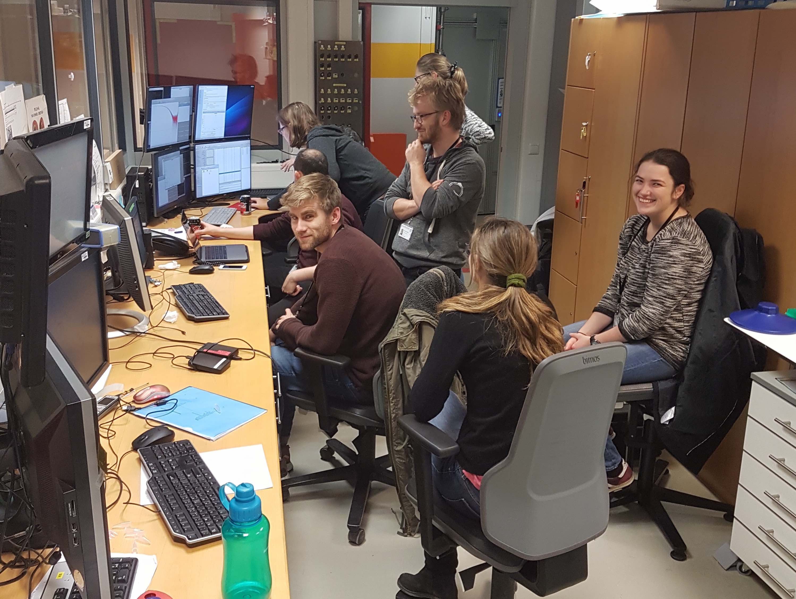

News
ECNS 2019 Conference
In early July, Alessandra Luchini, Martin Schmiele and Kell Mortensen attended the 7th "European Conference on Neutrons Scattering" (ECNS) in St. Petersburg during the season of the "Белые ночи", the "White nights".
USAXS beamtime at the APS
At the start of February 2019, Erik and Greg traveled to Chicago with collaborators in the Food Science department to study aggregates of casein micelles in processed milk products. Preliminary measurements using our in-house SAXS instrumnet at the NBI had showed that scattering at smaller angles would be required to characterise the structures in these milk products. A unique instrument at the Advanced Photon Source (APS) X-ray synchrotron near Chicago makes it possible to study these ultra-small-angles. After 24 hours and over 200 measurements, the team have a better understanding of the structure of milk and a large amount of data to model.
Trip to SAS2018 Conference


During October 2018 a large part of our group had a very nice trip to the SAS2018 conference in Traverse City in the USA. The conference was filled with interesting talks, and socializing with collegues and long-time collaborators. We were a rather large delegation: Joao and Tone from the Biological department, Kell and Anine from our section, and Lise, Nicolai, Andreas, Frederik and Lasse from the Arleth Group. On the picture above, we're joined by Jan Skov Pedersen and Jannik N. Pedersen from Aarhus University. Remarkably, everyone of us gave talks, and left a significant mark on the biochemistry and soft-matter related sessions. Furthermore, Andreas was awarded this years Otto Kratky Prize for his talk titled: Analysis of Small-Angle Scattering Data Using Model Fitting and Bayesian Regularization. Congratulations to him from the entire group!
Neutrons and Food 5 Conference
Venturing into real space

As a group focused on scattering experiments, we usually prefer to work in reciprocal space, however, we have recently ventured into real space, by performing electron microscopy on some of our protein samples. One example is our recent negative stained electron microscopy experiments on nanodiscs with apolipoprotein E as a belt protein, and the results are very promising. It seems like we can benefit greatly from combining our usual SAXS and SANS approach with electron microscopy to get a complete picture (now literally) of these biological macromolecules. Thanks to Thomas Boesen from Aarhus University, Klaus Qvortrup and Tillmann Pape from the Core Facility for Integrated Microscopy (CFIM) and Michael Gajhede from department of drug design and pharmacology at University of Copenhagen for support with data collection and reduction.
Winter 2017: Beamtimes and the yearly Mont d'Or challenge
The winter has been a busy one for the Arleth Group. We have been on many beamtimes, both SAXS and SANS, and conducted a lot of research. Many people from the group went on one of our largest beamtimes of the year, as we went to the BioSAXS (P12) beamline at DESY in Hamburg, Germany. This has been a yearly event as part of a larger collaboration with multiple danish reasearch groups. It was a busy beamtime with many people and many samples, with measurements going until the very end of the beamtime. The picture is of our team in the hutch at P12 We have also had a team going to FRM-II in Munich, Germany to perform SANS experiments on Nanodiscs. The winter is also the time of one of our favourite social gatherings: the yearly Mont d'Or challenge. Organized by Søren, it is an evening of Mont d'Or cheese, good wine, and good company. Lastly, congratulations to Søren, Martin Cramer, Andreas and former group members Pie, Grethe, and Søren Kynde and our collaborators from Poul Nissens group at Aarhus University, and to Jette Kastrups and Poul-Erik Jensens groups at University of Copenhagen on the publication of the paper "Invisible detergents for structure determination of membrane proteins by small-angle neutron scattering" in the FEBS Journal in the January issue. Also many thanks to the collaborators at the beamlines at ANSTO, FRM-II, and ILL where the SANS data were collected, and Dr. Tamim Dwarish at the National Deuteration Facility at ANSTO for supplying custom deuterated lipids and detergents.
Autumn 2017: Beamtimes
This summer and autumn has been very productive, with many visits to large-scale facilities all over the world. Martin S., and Lasse kicked off the beamtime runs with a visit to the BioSAXS (P12) beamline at DESY in Hamburg, Germany. The picture is of Lasse loading samples in the robot sample-changer. Søren, Nicolai, Andreas, and Raul have been to FRM-II in Munich, Germany to perform small-angle neutron (SANS) experiments using contrast variation. Andreas, Raul, and Søren has been to PSI, Switzerland to collect neutron scattering data. Erik, Martin S., and the LINX team have also been to FRM-II as part of the industry outreach projects. Lastly, Nicholas, Søren, Martin N. and Lasse went to APS at the Argonne National Laboratories in the USA to do time-resolved SAXS experiments. The scene is now set for a nice winter of data analysis!
April 2017: Group Day!
This years Group Day has been successfully held. It was a very productive day with presentations from everybody, and communal discussions about research results or obstacles to overcome. The day ended with dinner and a social event. The picture is of the lunch - with traditional danish smørrebrød - where the sun was out.